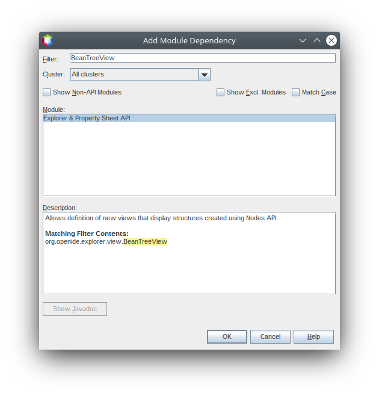
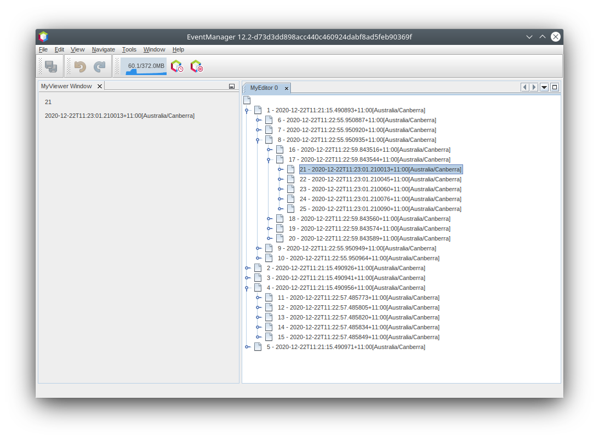
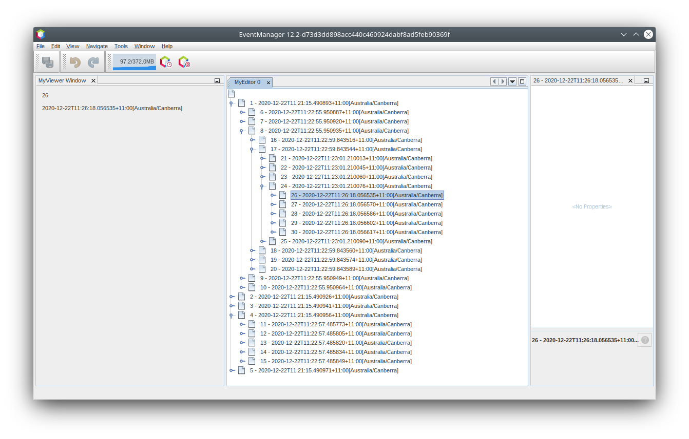
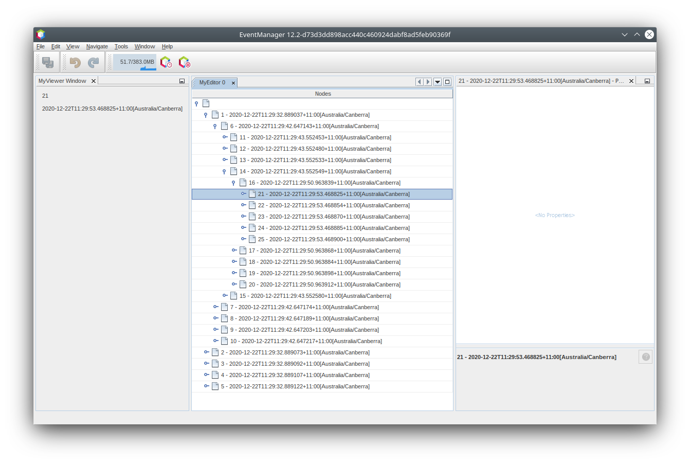
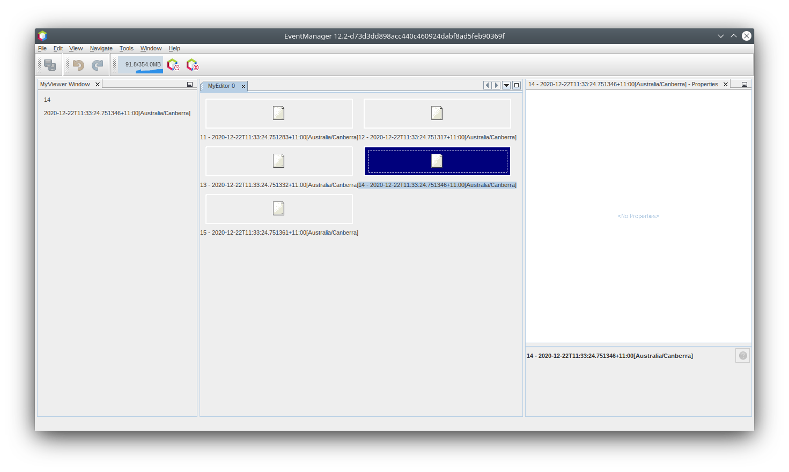
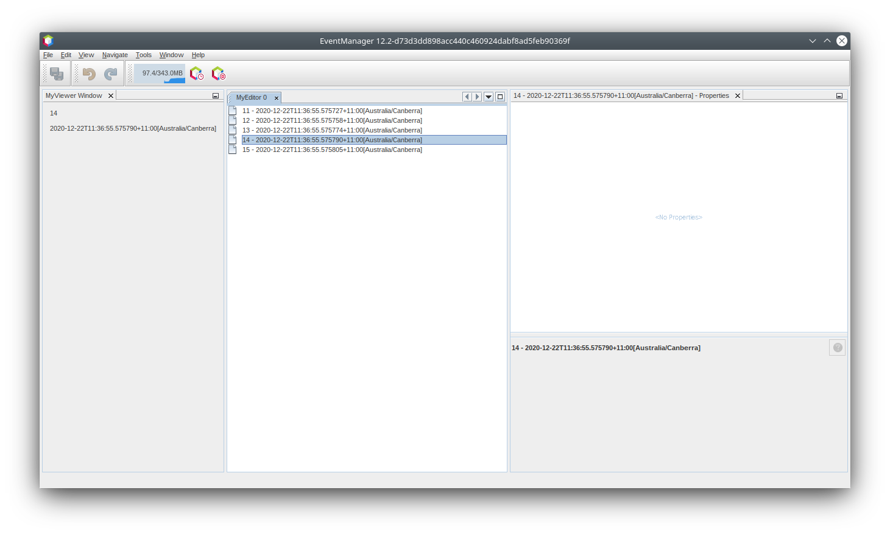
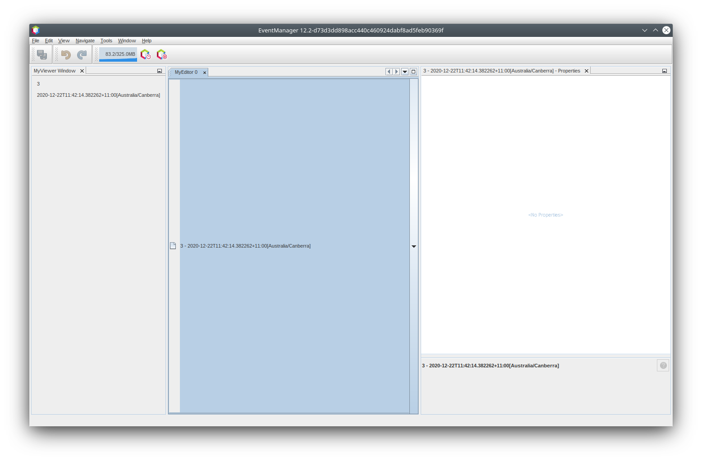
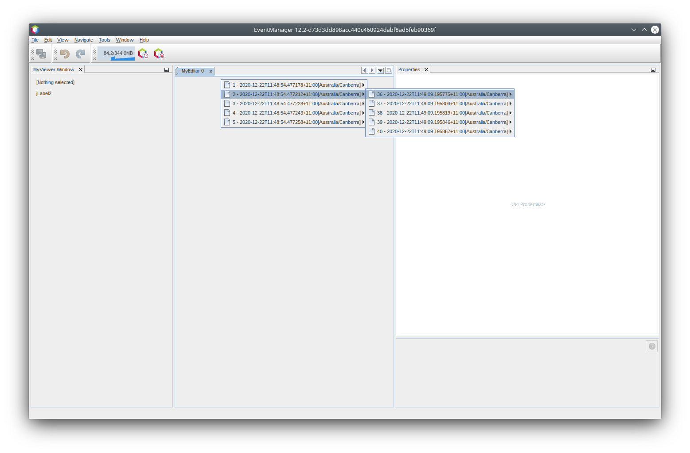
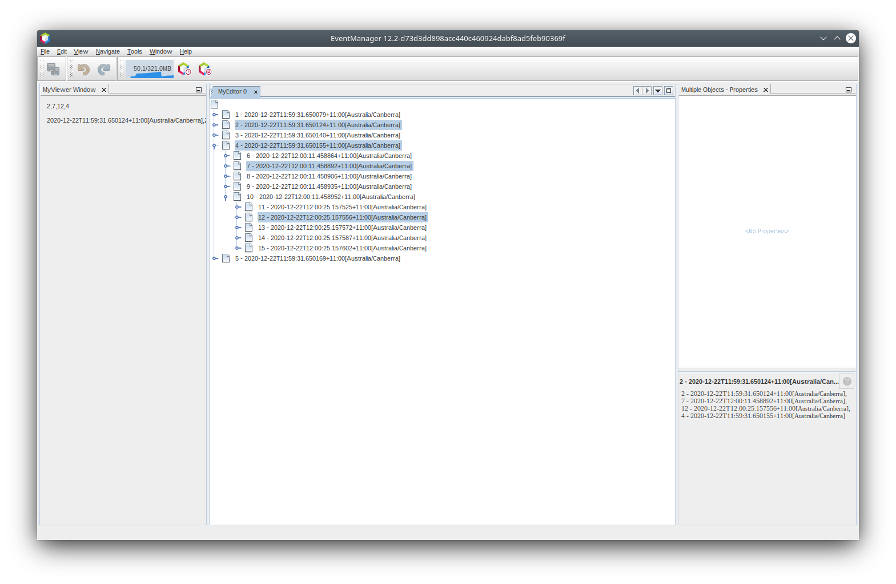

Apache NetBeans
Apache NetBeansLatest release
NetBeans Selection Management Tutorial II - Using Nodes
Last reviewed on 2020-12-22
This tutorial is part 2 of a series. The previous tutorial covered the basics of component-wide selection handling in NetBeans - how to provide objects from a ` TopComponent's ` Lookup, and how to write other components that are sensitive to the Lookup of whatever component has focus. This tutorial assumes that you have completed the previous tutorial, and have the source code to hand, since we will be modifying it in this part.
This tutorial focuses on the Nodes API, which makes it possible to do more granular views and selection than just component-level selection. Of course, you could write a component that reads and writes into its own Lookup whatever it wants, and provides more granular selection logic that way. But the Nodes API makes it very easy to do this, and offers a number of advantages over doing it yourself.
Later parts of this tutorial series introduce more advanced use of the Nodes API.
For troubleshooting purposes, you are welcome to download the completed tutorial source code.
Introduction to the Nodes API
The first advantage is that the Nodes API provides a presentation layer - a layer between the data model being edited in some way, and the UI components that expose the data model to the user. This is quite useful and powerful, as the same model may be presented in multiple ways, or with multiple UIs.
The second advantage is the Explorer API - the module org.openide.explorer provides a vast array of components - trees, lists, tree tables and more - which can render a Node and its children.
A Node is a generic hierarchical object - a Node has:
-
Children - Nodes in a hierarchy underneath it, that can be displayed in a tree
-
Actions - An array of actions that can be displayed in a popup menu
-
Display Name - A human-readable, localized display name that can be shown in a UI component
-
Icon - An icon that can be shown in a UI component
and `Node`s can fire changes in any of the above, and the explorer UI components will automatically update themselves.
This is not to say that the content of the previous tutorial was useless - on the contrary, it is the reason the Nodes API can work. The reason: org.openide.nodes.Node has a method, you guessed it, getLookup(). In fact what is happening when you change selection in the Projects tab in the IDE, for example, is…the Projects tab is a TopComponent. It proxies the Lookup of whatever object(s) are currently selected in the tree - just as the Utilities.actionsGlobalContext() Lookup proxies whichever component is focused and fires changes when focus changes.
Thanks to the components in the Explorer API, it is very easy to create your own views of a tree of Node s, and have this type of proxying in your own components with very little code. Viewer type components such as the MyViewer component in the previous tutorial do not have to do anything special to be able to respond to selection changes in Explorer components - they will automatically be notified as selection changes.
Creating an Explorer View
The first thing you will do is some substantial modifications to your MyEditor editor component (from the previous tutorial). This starts with opening it in the editor.
-
First, bring up the properties dialog for the My Editor project by right-clicking the My Editor project and choosing Properties. On the Libraries tab, click the Add Dependency button, and type "BeanTreeView" in Filter text box:

Select the "Explorer & Property Sheet API", and click OK to add this dependency so you can use classes from it.
-
Open the MyEditor.java file. If not already showing, switch to the form designer.
Select all of the components (two text fields, and the button), and delete them.
In the following steps, we will use a component from the Explorer & Property Sheet API, instead of the components we have been using so far.
-
Switch to the Source view of MyEditor.java, and rewrite the constructor of the
MyEditorclass as shown below:
public MyEditor() {
initComponents();
Event obj = new Event();
associateLookup(new AbstractLookup(content));
setLayout(new BorderLayout());
add(new BeanTreeView(), BorderLayout.CENTER);
setDisplayName("MyEditor " + obj.getIndex());
}BeanTreeView is a component from the Explorer & Property Sheet API - a basic JTree-based view over a Node and its children, with built-in handling of popup menus, searching and more. Press Ctrl+Shift+I to import BeanTreeView, because the import statement needs to be added.
-
Remove the unused
updateContent()method.
-
The next step is to give your tree something to show. Explorer UI components work like this: When added to a container, they search that container and their ancestors until they find one that implements
ExplorerManager.Provider. So you don’t set the node to be viewed directly on the component - you set it on the component’s manager. This makes it possible to have multiple views, master/detail views and such, all managed by a single manager. Add to the signature of MyEditor as follows:
public class MyEditor extends TopComponent implements ExplorerManager.Provider {Then press Ctrl+Shift+I to fix imports. Keeping the cursor in the signature line, a lightbulb glyph should appear in the margin. Press Alt+Enter, and accept the hint "Implement all abstract methods". This will add one method, getExplorerManager(). Implement it as follows:
private final ExplorerManager mgr = new ExplorerManager();
@Override
public ExplorerManager getExplorerManager() {
return mgr;
}-
Now, since the goal is one component that can display multiple
Event`s, you need a `Nodeor two to display in your component. Each one will own an instance ofEvent. So, right now you’ll just add the code that will create a root node for your tree view. Add the following line to the constructor:
mgr.setRootContext(new AbstractNode(Children.create(new EventChildFactory(), true)));This is the code that sets the root node for all of the explorer views that are child components of MyEditor. The Children.create is a static call from the NetBeans APIs that will, thanks to the true parameter, create the child components asynchronously, that is, as needed, instead of all at once.
-
If you tried Fix Imports, you may have seen the error dialog telling you that neither
AbstractNode,Children, norEventChildFactorycould be resolved. To resolveAbstractNodeandChildren, you need to add one dependency, on the Nodes API module. Right click the My Editor project and select Properties, go to the Libraries page and click Add Dependency. Type "AbstractNode" in the Add dialog, and when the item "Nodes API" in the list is selected, click OK or press Enter.
-
Now, back in the source editor, press Ctrl-Shift-I to Fix Imports. You will be notified that
EventChildFactorycould not be resolved. That’s okay - you’re about to write it, in the next section.
Implementing Nodes and Node Children
You’ll notice you’re using a class called AbstractNode above. Despite its name, it is not an abstract class! It is a utility implementation of org.openide.nodes.Node which can save you some time and trouble - rather than implement Node yourself, you can just create an AbstractNode and pass it a Children object which will provide child nodes for it, and then set its icon and display name as needed. So it is a simple way to get a Node object to represent something, without needing to do any subclassing of Node itself.
The next step is to implement EventChildFactory, so that there are subnodes underneath the initial node.
-
Right click the
org.myorg.myeditorpackage in the My Editor project, and choose New > Java Class from the popup menu. In the New Java Class wizard, name the class "EventChildFactory", and click Finish or press Enter to create the class.
-
Modify the signature of the class so it extends
ChildFactory:
public class EventChildFactory extends ChildFactory<Event> {Press Ctrl+Shift+I to Fix Imports.
-
Position the cursor in the class signature line. When the lightbulb glyph appears in the margin, press Alt-Enter and then Enter again to accept the hint "Implement all abstract methods". This will add a protected
createKeys(List<Event> list)method - this is where you will create the keys, on a background thread, that will be used to create the children of your root node. The children will be created the first time the object is asked for its child nodes. So you can delay creation of child Nodes until the user has really expanded the parent node in a view and needs to see them. Implement the method as follows:
@Override
protected boolean createKeys(List<Event> list) {
Event[] objs = new Event[5];
for (int i = 0; i < objs.length; i++) {
objs[i] = new Event();
}
list.addAll(Arrays.asList(objs));
return true;
}As you may have guessed from the name ChildFactory, what your parent class does is take an array or Collection of key objects, and act as a factory for child nodes for them. For each element in the array or collection you pass to the toPopulate list above, the createNodeForKey() method shown below will be called once when true is returned.
| This means that you can have more than one node to represent one object, if that makes sense in your design. |
-
Now you need to implement the code that actually creates Node objects for all of these. Implement
createNodeForKeyas follows:
@Override
protected Node createNodeForKey(Event key) {
Node result = new AbstractNode(
Children.create(new EventChildFactory(), true),
Lookups.singleton(key));
result.setDisplayName(key.toString());
return result;
}The new Node is created by passing in the definition of its Children, together with the current Event, which is put into the Lookup of the Node. When the user selects the Node, the object in its Lookup will be proxied by the Lookup of the TopComponent, which in turn is proxied by the global Lookup. In this way, you make the current Event object available to any object that is interested in it, whenever the Node is selected.
Press Ctrl+Shift+I to Fix Imports.
-
The last step is to install a bit of plumbing code that will wire up your explorer manager to your TopComponent’s lookup. First, delete the line
private final InstanceContent content = new InstanceContent();from the head of the class definition - you will be using a utility to wire up the selected Node’s `Lookup to your component’s Lookup.
-
Modify the constructor of
MyEditorso it looks like this:
public MyEditor() {
initComponents();
Event obj = new Event();
associateLookup(ExplorerUtils.createLookup(mgr, getActionMap()));
setLayout(new BorderLayout());
add(new BeanTreeView(), BorderLayout.CENTER);
setDisplayName("MyEditor " + obj.getIndex());
mgr.setRootContext(new AbstractNode(Children.create(new EventChildFactory(), true)));
}Press Ctrl+Shift+I to Fix Imports which will add the ExplorerUtils import.
Running the Tutorial
You may have noticed that because you pass a new instance of EventChildFactory to each AbstractNode you create, that you will end up with an infinitely deep tree of Events - each Node will have five child Nodes, each with its own Event, although the children will only be created as required.
You are now ready to run, so right-click EventManager and choose Clean and Build, and then right-click again and choose Run from the popup menu. When the application starts, you should be able to browse the Events, as shown below:

If you open the property sheet (From the Window menu, select IDE Tools and then Properties), then you should see your viewer and the property sheet update themselves to show the Event belonging to each node, as shown below:

Exploring Explorer
Now that you have the above code, it can be interesting to explore some of the other components available in the Explorer & Property Sheet API, which can also render a Node and it’s children. You can do this by opening MyEditor in the Source view and changing add (new BeanTreeView(), BorderLayout.CENTER) to something different, in the constructor.
Some of the options are:
-
OutlineView - a tree-table - a table that has a tree as the leftmost column:

-
IconView - a component that shows Node children in equally spaced icons, similar to Windows Explorer

-
ListView - display nodes in a JList (you can set how deep into the Node hierarchy it should go)

-
ChoiceView - a combo-box view of a Node and its children (typically used in combination with other elements, rather than being the primary view)

-
MenuView - a
JButtonthat pops up a menu of a Node and its children

Handling Multi-Selection
You may have noticed that BeanTreeView - the basic tree view for Nodes - lets you select more than one Node at a time. Therefore, it might be desirable to modify your viewer component to display information about all of the selected nodes:
-
Open
org.myorg.myviewer.MyViewerTopComponentfrom the My Viewer project, in the editor. Switch to Source view if not already selected.
-
Replace the
resultChanged()listener method with the following code:
@Override
public void resultChanged(LookupEvent lookupEvent) {
Collection<? extends Event> allEvents = result.allInstances();
if (!allEvents.isEmpty()) {
StringBuilder text1 = new StringBuilder();
StringBuilder text2 = new StringBuilder();
for (Iterator i = allEvents.iterator(); i.hasNext();) {
Event o = (Event) i.next();
text1.append(o.getIndex());
text2.append(o.getDate().toString());
if (i.hasNext()) {
text1.append(',');
text2.append(',');
}
}
jLabel1.setText(text1.toString());
jLabel2.setText(text2.toString());
} else {
jLabel1.setText("[no selection]");
jLabel2.setText("");
}
}As usual, fix imports.
-
Clean and Build, and Run again.
So you can see that the Lookup created by ExplorerUtils handle not only proxies the Lookup of whatever Node is selected; it also correctly proxies the Lookup for multiple selected entries.

Review of Concepts
To review a few of the concepts you’ve covered here:
-
A
Lookupis like aMapwhere the keys are classes and the values are instances of those classes. It’s also useful to think of aLookupas a place that objects swim into and out of, and you can subscribe to be notified of the arrival and departure of specific types of object. -
Utilities.actionsGlobalContext()is aLookupwhich proxies theLookupof whicheverTopComponentcurrently has keyboard focus, and fires changes when focus moves to a different component. -
A
Nodeis a presentation object that can be displayed in a tree, list or other component from the Explorer API. EachNodehas its ownLookup. -
Just as
Utilities.actionsGlobalContextproxies theLookupof TopComponents (so you can just ask that lookup for a result and listen for changes in it, rather than having to track focus changes yourself), theLookupcreated byExplorerUtils.createLookup(ExplorerManager, ActionMap)will create aLookupwhich automatically proxies theLookupof whateverNode(s) are selected in an Explorer component.
Next Steps
So you now have a view that can display Node s that expose some underlying model object (Event in your case). In the next tutorial, you will cover how to enhance the Nodes you have already created with actions, properties and more colorful display names.